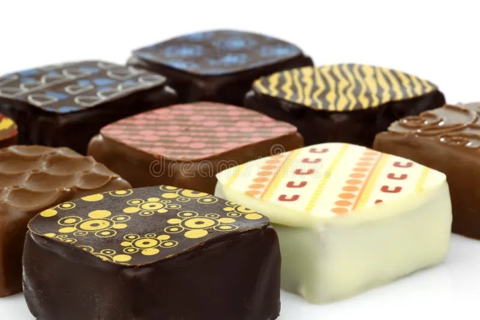
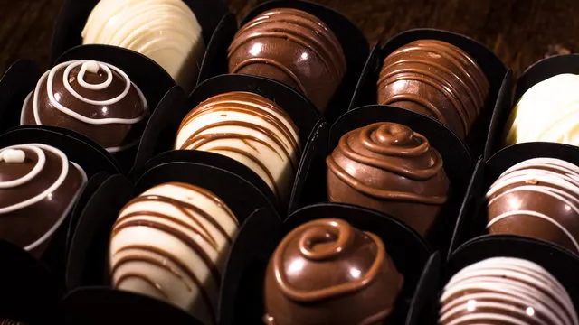

Os bombons de chocolate recheados são doces pequenos, geralmente feitos com uma cobertura de chocolate e um recheio interno.


Os bombons artesanais costumam ter preço mais alto, pois são produzidos em menor quantidade e podem ter ingredientes especiais. Já os bombons industrializados costumam ser mais baratos, pois são fabricados em grande escala.